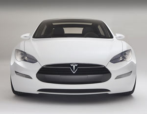

The U.S. Department of Energy (DOE) announced $8 billion in conditional loan agreements on Tuesday for Ford Motor Company, Nissan North America and Tesla Motors to fund the development of advanced vehicle technologies.
The loan commitments include a $5.9 billion loan to Ford for upgrading factories in five states to produce 13 more fuel-efficient models, a $1.6 billion loan to Nissan to build advanced electric vehicles and advanced batteries, and a $465 million loan to Tesla Motors to manufacture its new electric sedan.
These are the first conditional loans released under DOE’s Advanced Technology Vehicles Manufacturing (ATVM) Loan Program, which is using an open, competitive process to provide about $25 billion in loans to companies that produce cars or vehicle components in the United States. To qualify, companies must propose projects that increase fuel economy to at least 25 percent above 2005 fuel economy levels.
Ford Motor Company will receive its loans through 2011, using the funds to upgrade its engine plants in Dearborn, Mich.; Cleveland; and Lima, Ohio, and to upgrade its transmission plants in Livonia, Mich.; Sterling Heights, Mich.; and Sharonville, Ohio. Ford will also upgrade its assembly plants in Chicago; Louisville, Ky.; Dearborn, Mich.; Wayne, Mich.; and Kansas City, Mo., converting two of the truck factories into assembly plants for cars. In addition, the Ford loans will finance advances in traditional combustion engines and electrified vehicles and help raise the fuel efficiency of more than two dozen popular models.
Nissan aims to manufacture a cost-competitive electric vehicle with a lithium-ion battery pack in Smyrna, Tenn., and plans to eventually reach a production capacity of 150,000 vehicles per year. Tesla Motors will use its funding to finance a California-based manufacturing facility for the Tesla Model S sedan, an all-electric sedan that can be recharged at a conventional 120-volt or 220-volt outlet. Production will begin in 2011 and ramp up to 20,000 vehicles per year by the end of 2013. Read more about the Tesla Model S in Electric Sedan New from Tesla Motors.
|
 TESLA MOTORS Tesla Motors will use its DOE funds to finance a manufacturing facility for the Tesla Model S, an all-electric sedan that takes three to four hours to charge using a 240-volt outlet, or as few as 45 minutes using a 480-volt outlet. |
|
|